android studio生成的apk在以下目录
基本的APK是一个压缩包，压缩包中有
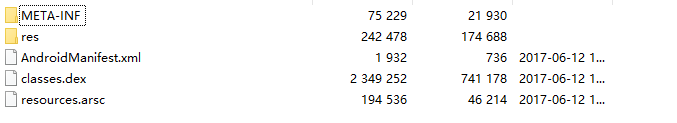
META-INF目录 签名信息，包括公司信息、文件的HASH值
Res目录 资源信息，包括图片、xml(布局文件、字符串、风格样式等)
AndroidMainfest.xml 清单文件，包括APK包名、四大组件的一些申明定义、权限、程序的入口
Classes.dex 可执行文件，包括java的类信息、方法信息、字段信息、虚拟机指令。dex文件的生成流程是从java源码->class文件->dex文件
Resources.arsc 资源序号文件，包括资源里的所有ID、名称。资源ID对应文件是R.class
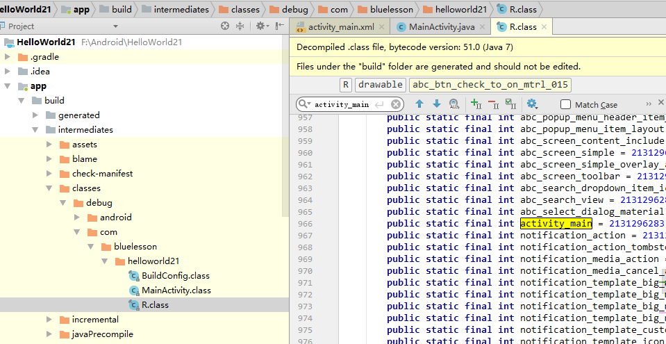
Lib目录 动态库，扩展名是.so ,包括C++代码，有各种平台，比如x86,arm
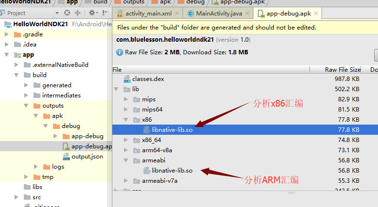
Assets目录 自定义资源，比如.txt,mp4,等等
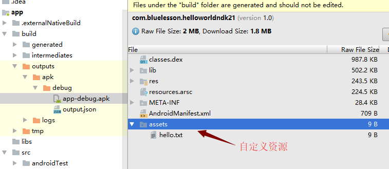
自己定义的MainActivity中onCreate
清单文件中application节点可以添加android:name属性，指定继承自application的类，用于初始化整个app的全局信息。继承自application的类有两个重写函数会执行，是程序最早执行的函数。
① attachBaseContext
② onCreate
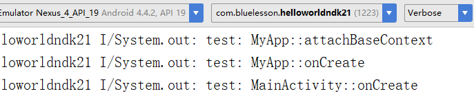
所以一个app最早执行的函数是 application的类中的attachBaseContext函数
一般apk加固之后，都会自定义application类，并重写其中的attachBaseContext函数或onCreate函数，并且声明为native类型的函数。
app运行的流程
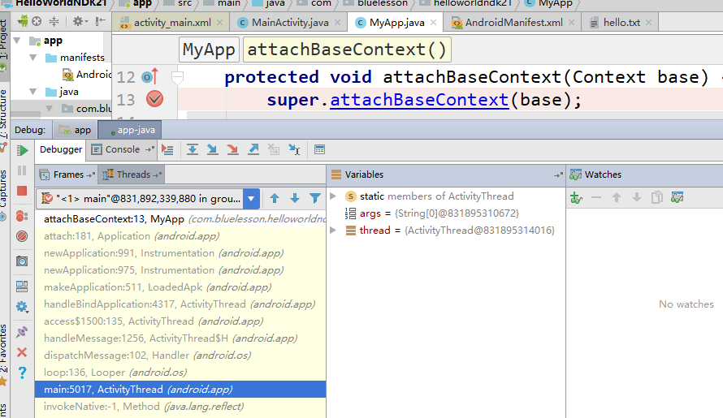
分为三个阶段
① android2.3~4.0 卡顿
② android4.1~4.4 成长，飞跃
android虚拟机dalvik->art
③ android5.0~现在 整体不错
逆向分析的环境
系统：android 4.4 （同时有dalvik和art）
手机: google nexus 4/5（500左右）
google nexus 6p(800左右)
① 列举设备
adb devices
② 将apk上传到设备
adb push
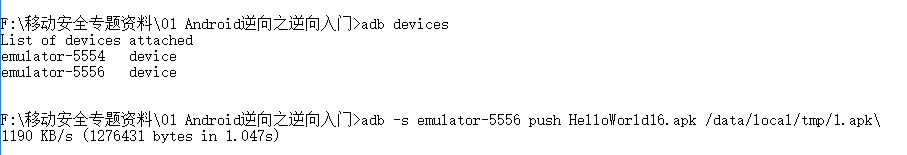
③ 安装apk
adb install -r apk文件名 （可以覆盖安装）
④ 启动apk
adb shell am start -n <包名/activity名称>
adb -s emulator-5556 shell am start -n com.bluelesson.helloworldndk21/.MainActivity
adb shell am start -D -n <包名/activity名称> (以调试方式启动)
⑤ shell命令
ls,cd,su,ps,ps | grep com,kill,chmod
① 概况
Dex文件是android java代码编译生成的二进制文件，包含了虚拟机指令(dalvik虚拟机)
MainActivity$MyOnClickListener.smali 签名工具，使用android系统源码编译时用到的一个工具
java -jar signapk.jar testkey.x509.pem testkey.pk8 update.apk update_signed.apk
反编译apk
java -jar apktool.jar d
java -jar apktool.jar d HelloWorld.apk
①将清单文件以及其他xml文件解密
②将资源序号文件(resources.arsc)与资源名称做了一个对应关系表
生成在了/res/values/public.xml
③将dex文件反编译成了smali代码
回编译 apk目录
java -jar apktool.jar b <反编译的apk文件目录>
java -jar apktool.jar b HelloWorld
生成的APK在 <反编译的apk文件目录>/dist目录中
dex2jar>d2j-dex2jar.bat
dex2jar>d2j-dex2jar.bat classes.dex
dex2jar classes.dex -> .\classes-dex2jar.jar
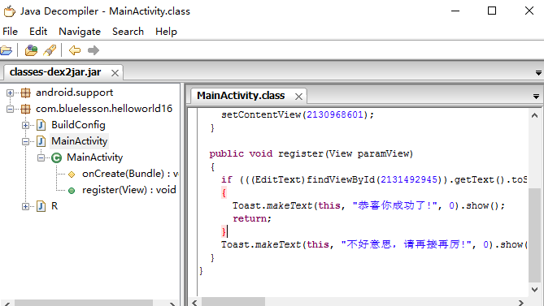
adb工具
常用命令
打开shell：adb shell ， adb -s 设备名称 shell
安装apk： adb install 1.apk ， adb install -r 1.apk
列举设备： adb devices
dex2jar工具集
将dex文件转成jar文件，方便jd-gui反编译
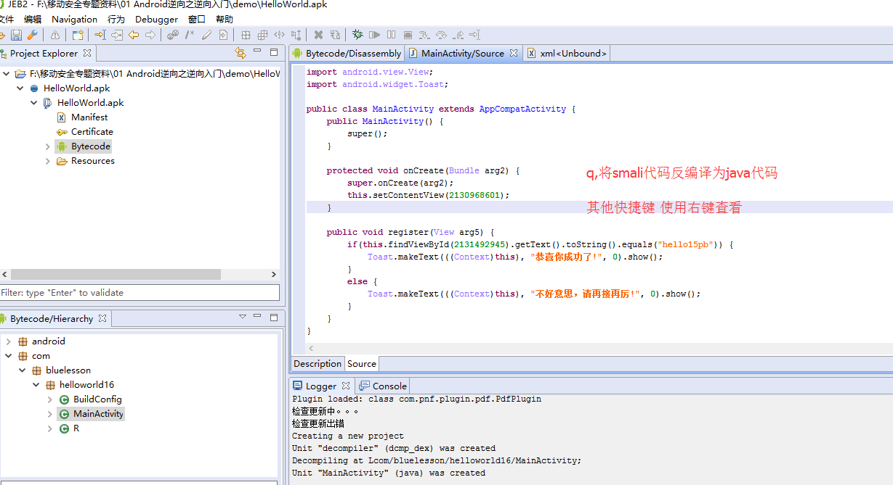
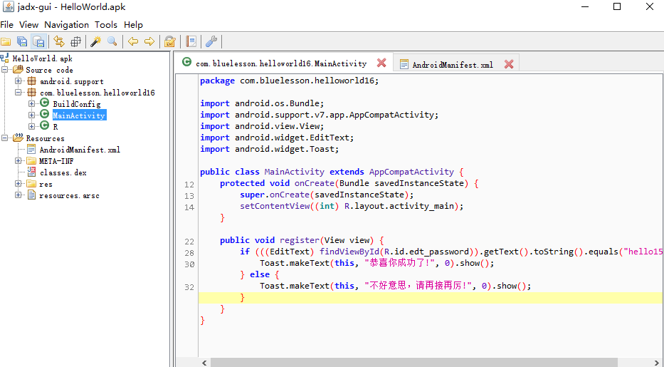
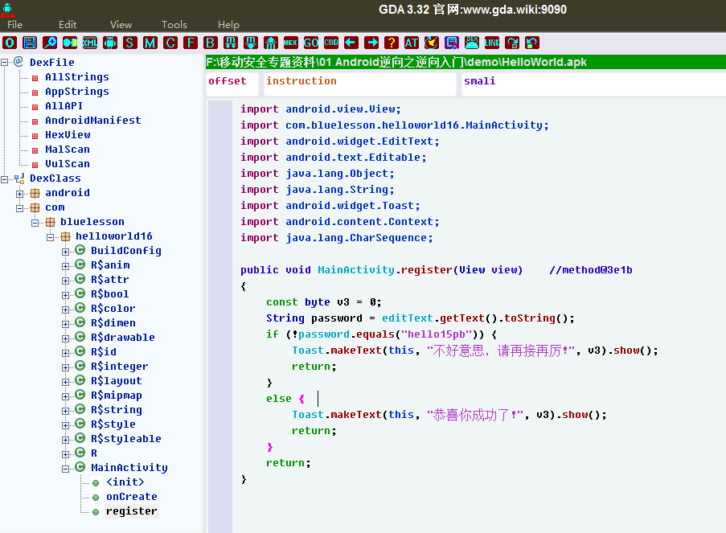
① 字符串分析法
② 日志分析法
③ 动态调试smali, 动态调试so文件(c++生成的文件)
④ API下断(调试so,对linux API下断)，栈回溯分析
但是需要注意的是，中文字符串在Android是以Unicode编码方式显示的，格式类似\u4e0d\u597d\u610f\u601d。我们需要进行转换，AndroidkKiller提供了这个功能
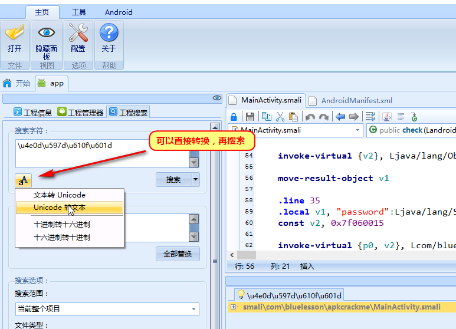
通过查找到对应代码，然后在代码附近可以发现显示成功的字符串。在成功字符串上面有关键跳转，我们只需要将关键跳转nop掉即可。其实在smali使用#号注释掉即可。
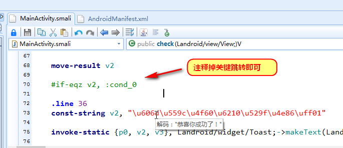
在代码的上方，应该就是正确密码比对的地方，查看上下文发现v2寄存器，使用资源ID中获取的一个字符串。
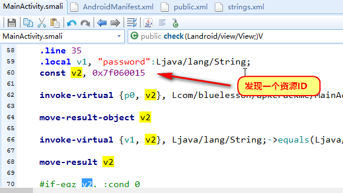
在这个时候，一般在工程中搜索资源ID，从资源ID找到对应的资源名称以及类型，然后再根据类型和名称找到对应资源的定义。
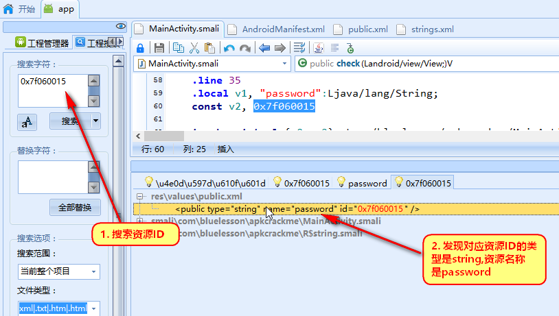
然后再去搜索对应资源名称，找到字符串定义，因为已经知道类型是sting,直接可以查看文件res/values/strings.xml。
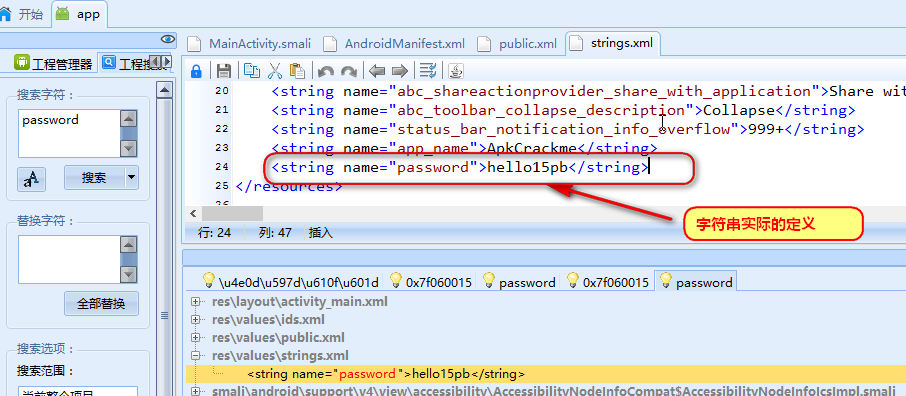
之后，重新编译，安装测试。
.class public LHelloWorld;#Ye olde hello world application#To assemble and run this on a phone or emulator:##java -jar smali.jar -o classes.dex HelloWorld.smali#zip HelloWorld.zip classes.dex#adb push HelloWorld.zip /data/local#adb shell dalvikvm -cp /data/local/HelloWorld.zip HelloWorld##if you get out of memory type errors when running smali.jar, try#java -Xmx512m -jar smali.jar HelloWorld.smali#instead.super Ljava/lang/Object;.method public static main([Ljava/lang/String;)V.registers 2sget-object v0, Ljava/lang/System;->out:Ljava/io/PrintStream;const-string v1, "Hello World!"invoke-virtual {v0, v1}, Ljava/io/PrintStream;->println(Ljava/lang/String;)Vreturn-void.end method
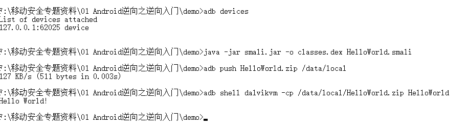
①添加过滤项
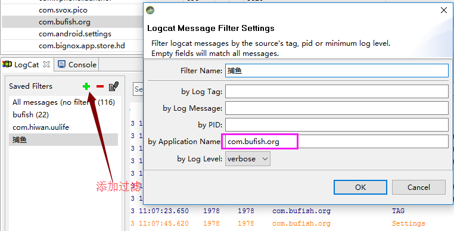
②搜索过滤
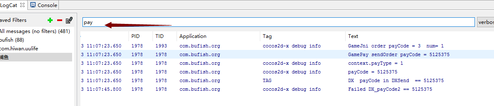
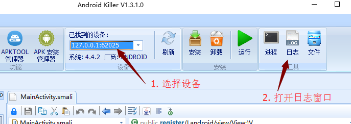
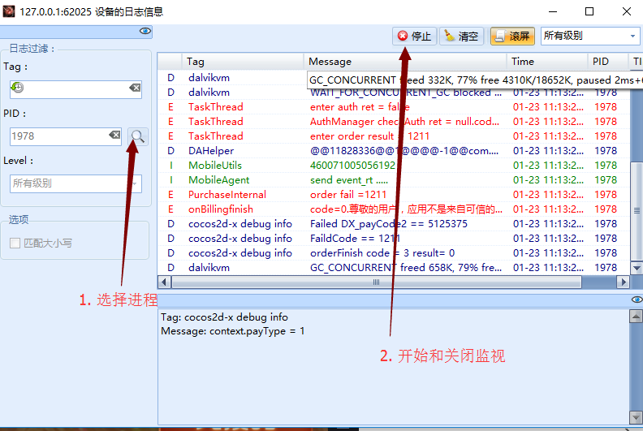
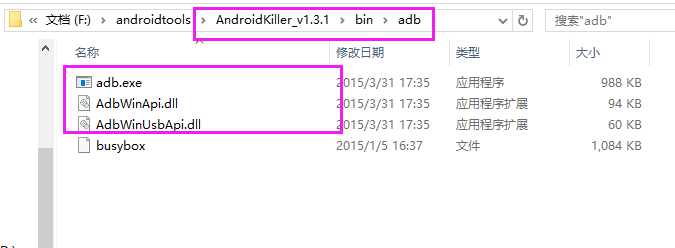
复制androidkiller中的adb以及dll，到SDK目录、夜神安装目录
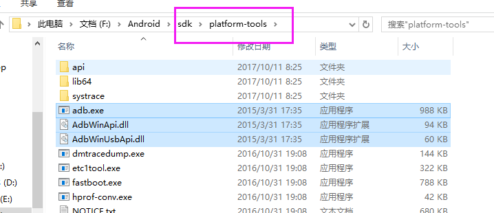
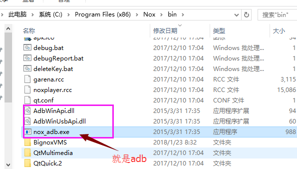